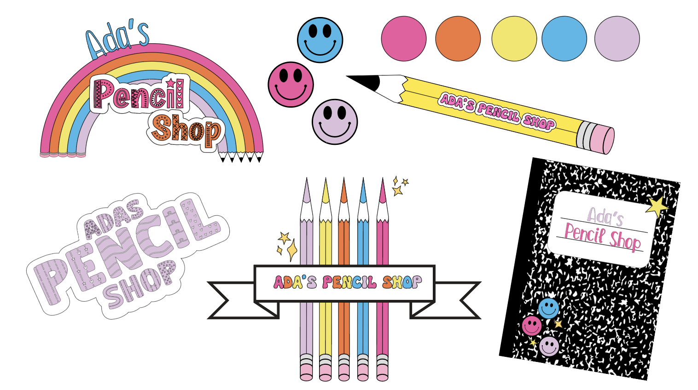
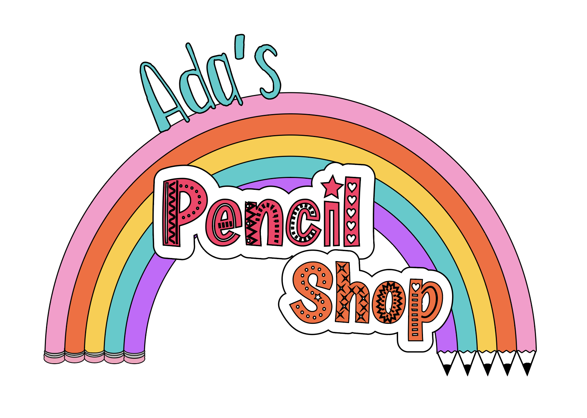

Creating the Brand Identity for Ada’s Pencil Shop
When I took on the project of branding Ada’s Pencil Shop, I knew I wanted to capture more than just a pretty logo. I wanted to create a brand experience that would spark joy, ignite curiosity, and feel like an invitation to create. This project was a chance to blend my love of storytelling with my passion for design, creating a playful world that encourages kids to let their imaginations soar.
My Personal Approach to Branding
For me, branding isn’t just about colors and logos—it’s about understanding the heart of a business and translating that into visuals and messaging that resonate with the audience. When I design a brand, I focus on weaving a story that is authentic, memorable, and deeply personal. I ask questions like: Who is this brand speaking to? What emotions do we want to spark? How can we make every interaction feel like a conversation?
With Ada’s Pencil Shop, I envisioned a brand that would feel like a child’s favorite storybook come to life—full of warmth, wonder, and endless possibilities.
Defining the Brand’s Voice
The brand voice was key to bringing Ada’s Pencil Shop to life. I wanted it to be playful and curious, like a little artist’s daydream. It needed to be welcoming and encouraging, creating a sense of belonging for every young creator who visits the shop. To do this, I combined friendly, rounded typography with a color palette inspired by classic childhood memories—sunny yellows, bold reds, and calming blues.
The Logo: Where Imagination Begins
The logo became the heart of the brand, a symbol that felt hand-drawn and personal. I designed it to be simple yet distinctive—a pencil that also forms the letter “A” in Ada’s name. This playful detail makes the logo feel like a sketch straight from a child’s drawing pad, instantly connecting to the brand’s core mission of fostering creativity.
Color, Typography, and a Touch of Magic
Color played a huge role in bringing Ada’s Pencil Shop to life. I selected a palette that is bright and joyful, but still soft enough to feel nostalgic. The typography is rounded and approachable, with just the right amount of whimsy to feel fresh and playful.
Creating the Full Brand Experience
Beyond the logo and color scheme, I wanted every touchpoint to feel like part of Ada’s world. I designed social media templates that highlight the brand’s playful tone, stationery that feels like a creative toolkit, and even imagined packaging ideas that would turn a simple pencil purchase into a small, magical moment.
For me, the most rewarding part of branding is seeing how all the pieces come together to tell a cohesive story. Ada’s Pencil Shop isn’t just a place to buy pencils—it’s a place where creativity begins, where each child is invited to dream, draw, and explore. My goal was to make sure that every detail, from the logo to the language, reflected that spirit of wonder and possibility.
Final Thoughts
Designing the branding for Ada’s Pencil Shop was a reminder of why I love what I do. It’s about more than just design—it’s about creating experiences that inspire and connect. I’m so excited to see how Ada’s Pencil Shop continues to grow and how this little brand will spark big ideas in the hearts of its young customers.